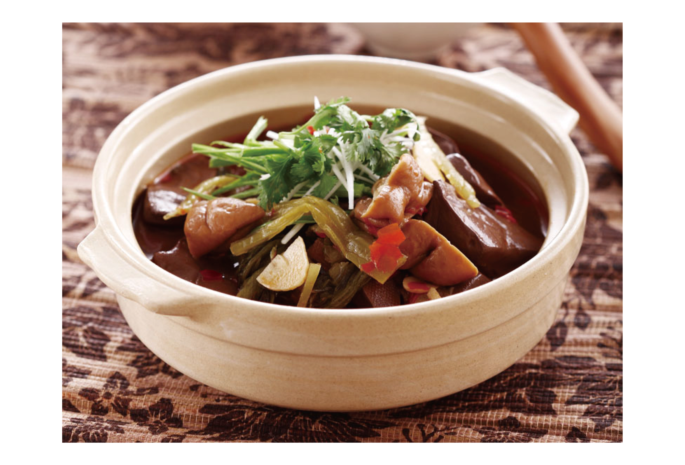
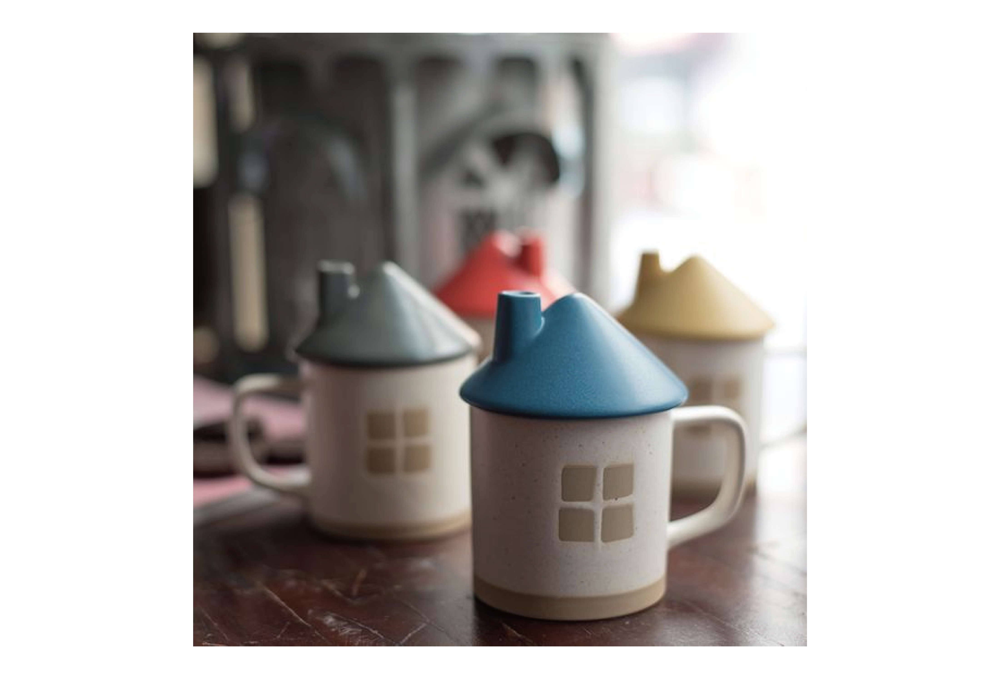

幾天前我發表了文章，收到不少女性的訊息，說明自己如何安排假期，親友給予怎樣的反應。其中最令人揪心的莫過於，最親近的人在扯後腿，甚至有網友的父母揚言要致電給先生的家人，道歉「自己的女兒太不懂事」。
我們的文化很熱衷拿孩子去比孩子，所以我要進行一個「拿父母去比父母」的動作。哼。
幾天前，晚上十一點，父親冷不防來電，我以為家裡有事，趕緊接起，豈料父親劈頭就是「除夕吃五更腸旺好嗎」，我雖一頭霧水，但還是很正直地答「好」。
事後，母親才給我還原事發現場。當晚父親愁容滿面地說，「除夕女兒不在了，圍爐少一個」。母親糾正他，「你在說什麼啊，她還是在家吃啊」。父親立即喜上眉梢，激動地說菜色務必要再加碼，於是有了那莫名的電話。除夕當晚，美珠煮了我最愛的炒蛤蜊，她還把殼給悉數挑去，美珠囑咐那一坨小蛤蜊山是「給女兒的」，只差沒有在每一顆蛤蜊上寫我的名字。餐後我起身要去洗碗，父親立刻驅趕我，「去陪妳媽聊天」。我說，「我可以洗碗啊」。父親堅持，「去聊天」。
我們的文化很熱衷拿孩子去比孩子，所以我要進行一個「拿父母去比父母」的動作。哼。
幾天前，晚上十一點，父親冷不防來電，我以為家裡有事，趕緊接起，豈料父親劈頭就是「除夕吃五更腸旺好嗎」，我雖一頭霧水，但還是很正直地答「好」。
事後，母親才給我還原事發現場。當晚父親愁容滿面地說，「除夕女兒不在了，圍爐少一個」。母親糾正他，「你在說什麼啊，她還是在家吃啊」。父親立即喜上眉梢，激動地說菜色務必要再加碼，於是有了那莫名的電話。除夕當晚，美珠煮了我最愛的炒蛤蜊，她還把殼給悉數挑去，美珠囑咐那一坨小蛤蜊山是「給女兒的」，只差沒有在每一顆蛤蜊上寫我的名字。餐後我起身要去洗碗，父親立刻驅趕我，「去陪妳媽聊天」。我說，「我可以洗碗啊」。父親堅持，「去聊天」。


